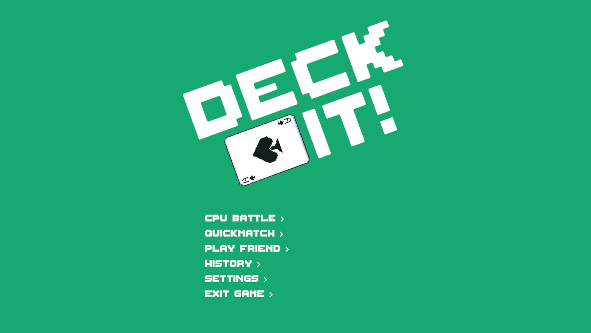

02 OCT 2026 | BY EMILY LOH

The main menu of Deck It!
I used to have a reputation on Scratch.
A small one, that is. My first exposure to “coding” was clicking blocks together and using WASD to move my single-frame Scratch cat across the screen. I enjoyed building little fun minigames and trying things out my way. So I spent hours outside of my middle school computer class coming up with drafts after drafts of games.
I made platformers, dress-up games, visual novels, casual games, card games, and the list went on. But very few of them ever saw the light of day. More than a decade later, I find myself doing something similar. Today, I sit with about a dozen drafted games on my device, some just a document with the gameplay details, others built out far enough for a player to experience 5 minutes of gameplay. Something was stopping me from finishing these games.
Recently, I tried something new and built a simple card game, Deck It! To my surprise, I finished it. But how? Why wasn’t I able to do the same for all the other games I was working on?
Well, before you can convince someone else to play your game, you need to convince yourself you will finish making it.
When I first moved from Scratch to Unity, I wanted to build a platformer. Hooded, the platformer at the end of my project page, was one that I was very excited for. I had a story and a concept. But I was a beginner at Unity, so I followed a tutorial.
Tutorials are a great start but they teach you skills, not how to build a game.
I quickly found myself stuck in the boundaries of my own game, boxed in by the limitations the tutorial had set for me. I couldn’t identify who my target audience was, and the game looked similar to the most viewed platformer tutorial on Unity anyway. I honestly didn’t think that through.
Then I built Deck It!, a game where two players face off by drawing a random card and deciding whether to play it or not. The goal was to defeat your opponent’s card by playing a higher number. But using all your higher cards early meant you’d run out of strong cards for the late rounds. It was a very simple concept, based on the card game Palace. It was a game that worked solo or multiplayer and relied on player luck, which meant anybody could enjoy it.
Considering all these things, I figured the game was for casual players. So I kept the concept simple and made the UI easy for anyone to follow. With chill gamers in mind, I chose a clichéd 8-bit background track with predictable, pleasant sounds, and kept the UI minimal so the game direction stayed clear.
A game lacks direction if you cannot envision who will play it. When the popular co-op game Peak was released, the developers were clear with who their audience was: friend groups that include non-gamers. Climbing the mountain required teamwork, and every run was filled with interesting traps and fun, curious objects. The game mechanic was simply walk and climb. The goal was even simpler: reach the peak with your friends.
Making a game is the same. You can’t cater for everyone. Instead, you need to know your player. This means narrowing down your game’s core mechanism and genre. Games these days have plenty of recycled themes and mechanics, sure. But that doesn’t mean you need to be a genius inventor to stand out. A game can be made from countless combinations of features: music, story, art, controls, skill systems, single or multiplayer, enemies, live opponents, gacha systems, and so on. Pick a few and make them your own, in your own color and style.
Have you ever played a game that you finished in 2 hours? What about a game you put hundreds of hours into? Can you tell what was so different about these two?
The difference starts with knowing how long your game is meant to be played. This determines whether your game is replayable, a single experience, or a mix. You might be able to see this when you decide on your game’s core mechanism and a few of its main features.
When I started building Deck It!, I designed it to be played in a fast fashion, like a card game you’d play at a friend’s house for 10 minutes, maybe twice in a row. That helped me decide how to make the rounds more complex and fun. It led me to add CPU difficulty modes and online matchmaking, which expanded the short, replayable gameplay.
But knowing when to stop building is just as important. With Hooded, I ran into a huge problem: I just had the idea of a platformer and wanted to create a bunch of levels. I didn’t know where to stop. Was I going to end after the main character achieved something big in the story? Or was I going to build as many levels as possible, like I was making Candy Crush? I was building with no goal in mind, creating endless levels with no direction.
Successful platformers have a very defined end. The beloved platformer Hollow Knight has several endings for players to experience. Even though the game offers different endings, there’s still something waiting for the players at the end. The same applies to developers: you need to know where the game ends so you can work toward that goal. On the other hand, Genshin Impact, a popular open-world game that’s still ongoing since its 2020 release. It’s clear to players that many mysteries remain in the story. The game’s yearly update cycle proves this commitment as they add a new region each year paired with several main story updates. The developers know their scope and understand they’re building toward a long-term goal.
The first two points are fairly easy to tackle even if your ideas aren’t perfect. But the biggest obstacle comes next. You abandon games when you run out of ideas or hit a wall. The perseverance problem.
Humans are naturally happier and more satisfied when they’re in control. But when we hit a learning curve that brings discomfort, we’re quick to abandon the effort and return to something that brings immediate gratification or distraction. It’s always hard to overcome that discomfort.
That’s why believing you can finish is actually the most important key to completing your game. Or a painting in the corner of your room. Or the bench for your backyard. Or those car upgrades you’ve been planning. If you believe in your vision, the hill you must climb becomes more bearable.
For me, Deck It! started as an experiment where I genuinely wanted to discover how to complete a game. And to do that, I had to complete it. The game itself was simple, nothing glamorous. Did I love playing it? Sure. Would I spend hours on it? No. But I had my eyes on a goal I truly believed in, something I was pursuing with purpose. So even though the game wasn’t my favorite idea among dozens of others, it was the one I knew I could see through as long as I was willing to put in the time for both the boring parts and learning the challenging obstacles.
Ugh, but that means I have to put so much time and effort just to finish this project!
What if I told you there’s no need for talent, no need for genius ideas to make things happen? What if I guaranteed you’d definitely finish what you believe in? What is really stopping you from unlocking your potential?
I was reading Grit by Angela Duckworth, where she details how the most successful people she knows are often called geniuses or naturally talented. But the truth was they put in the time and effort to learn, to surpass their naturally talented peers. The people who didn’t give up and embraced their imperfections were the ones who could deliver and truly love their passions.
Different people find grit from different things. Some from curiosity. Some from proving something to themselves. Some from wanting to give others an experience. You need to know your why. And chase it to the end.
Deck It! isn’t my best game. It might not even be that fun.
But it was the first game I finished because I answered three questions: what, who, and why. If you want to make games, start there. Not with “I want to make something profitable” or “I want to make something people love to play.” Start with “I want to build something I believe in.”
The next thing you know, you will have something, even if it’s imperfect. It’ll be real, more than just an idea jotted down in your notes app. Then you’ll improve it, fix what you didn’t see coming, and maybe find peace with the second iteration of your idea.